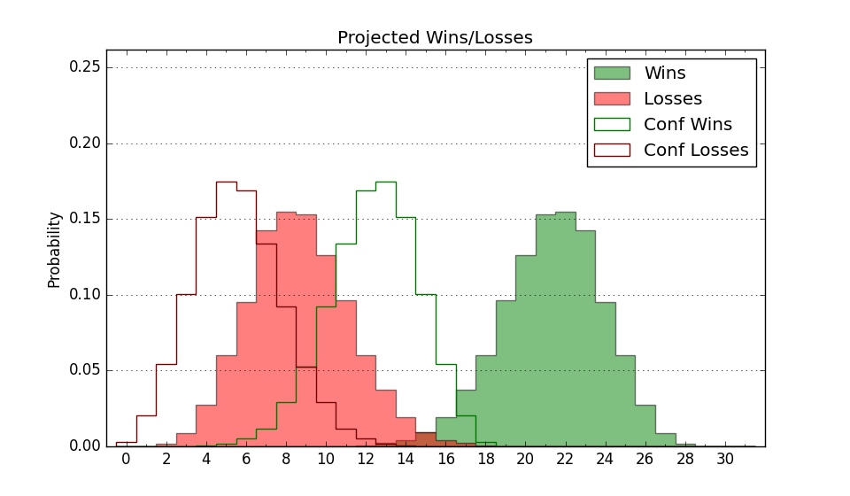

| Home | Game Probabilities | Conferences | Preseason Predictions | Odds Charts | NCAA Tournament |
| City: | Richmond, Virginia | |
| Conference: | Atlantic 10 (1st)
| |
| Record: | 0-0 (Conf) 5-2 (Overall) | |
| Ratings: | Comp.: 14.7 (61st) Net: 15.7 (65th) Off: 103.3 (181st) Def: 87.6 (12th) SoR: 16.1 (96th) |
| Remaining | ||||||
|---|---|---|---|---|---|---|
| Date | Opponent | Win Prob | Pred. | |||
| 12/4 | Georgia Southern (235) | 94.0% | W 82-62 | |||
| 12/9 | Penn (322) | 97.3% | W 82-58 | |||
| 12/14 | (N) Colorado St. (132) | 78.4% | W 71-63 | |||
| 12/18 | @ New Mexico (58) | 32.1% | L 71-77 | |||
| 12/22 | William & Mary (229) | 93.6% | W 84-64 | |||
| 12/31 | @ St. Bonaventure (85) | 48.6% | L 65-66 | |||
| 1/4 | @ Loyola Chicago (99) | 54.3% | W 68-67 | |||
| 1/8 | Fordham (209) | 92.4% | W 77-60 | |||
| 1/14 | Saint Louis (152) | 88.8% | W 82-67 | |||
| 1/17 | @ Saint Joseph's (113) | 61.3% | W 70-66 | |||
| 1/21 | @ Rhode Island (93) | 51.9% | W 73-72 | |||
| 1/24 | St. Bonaventure (85) | 76.3% | W 69-61 | |||
| 1/28 | @ Saint Louis (152) | 69.9% | W 77-71 | |||
| 2/1 | Richmond (181) | 90.5% | W 73-58 | |||
| 2/4 | La Salle (155) | 88.9% | W 78-63 | |||
| 2/7 | @ Dayton (29) | 21.9% | L 66-75 | |||
| 2/12 | @ George Washington (142) | 68.5% | W 73-67 | |||
| 2/19 | Massachusetts (172) | 90.0% | W 78-62 | |||
| 2/22 | George Mason (72) | 72.6% | W 69-62 | |||
| 2/25 | @ Richmond (181) | 73.6% | W 69-62 | |||
| 2/28 | Davidson (117) | 84.9% | W 76-64 | |||
| 3/4 | @ Duquesne (222) | 80.2% | W 71-61 | |||
| 3/7 | Dayton (29) | 48.9% | L 70-71 | |||
| Previous | Game Score | |||||
| Date | Opponent | Win Prob | Result | Off | Def | Net |
| 11/4 | Bellarmine (297) | 96.4% | W 84-65 | 2.5 | -10.4 | -7.8 |
| 11/8 | (N) Boston College (147) | 80.8% | W 80-55 | 1.7 | 17.2 | 18.9 |
| 11/13 | Merrimack (253) | 94.9% | W 63-42 | -17.3 | 16.2 | -1.1 |
| 11/16 | Loyola MD (329) | 97.5% | W 83-57 | 4.3 | 0.8 | 5.2 |
| 11/21 | (N) Seton Hall (127) | 77.8% | L 66-69 | -9.5 | -8.4 | -17.8 |
| 11/22 | (N) Nevada (25) | 31.9% | L 61-64 | 3.3 | 3.3 | 6.6 |
| 11/24 | (N) Miami FL (87) | 63.9% | W 77-70 | 8.8 | 1.0 | 9.8 |
| Stats & Trends | |||||
|---|---|---|---|---|---|
| Current | Day | Week | Month | Season | |
| Composite | 14.7 | -1.1 | +1.5 | +1.4 | +1.4 |
| Comp Rank | 61 | -3 | +4 | -2 | -2 |
| Net Efficiency | 15.7 | -1.9 | +2.6 | -- | -- |
| Net Rank | 65 | -7 | +16 | -- | -- |
| Off Efficiency | 103.3 | -1.5 | +0.0 | -- | -- |
| Off Rank | 181 | -12 | +11 | -- | -- |
| Def Efficiency | 87.6 | -0.4 | +2.6 | -- | -- |
| Def Rank | 12 | -1 | +12 | -- | -- |
| SoS Rank | 243 | -30 | +10 | -- | -- |
| Exp. Wins | 21.3 | -0.5 | +0.7 | +1.6 | +1.6 |
| Exp. Conf Wins | 12.4 | -0.4 | +0.1 | +0.5 | +0.5 |
| Conf Champ Prob | 21.1 | -4.4 | -4.2 | -0.8 | -0.8 |

| Advanced Stats | ||
|---|---|---|
| Stat | Value | Rank |
| Off Eff FG % | 0.530 | 105 |
| Off Ast Ratio | 0.168 | 58 |
| Off ORB% | 0.302 | 132 |
| Off TO Rate | 0.176 | 321 |
| Off FT Ratio | 0.376 | 115 |
| Def Eff FG % | 0.413 | 9 |
| Def Ast Ratio | 0.095 | 4 |
| Def ORB% | 0.282 | 188 |
| Def TO Rate | 0.198 | 19 |
| Def FT Ratio | 0.462 | 335 |